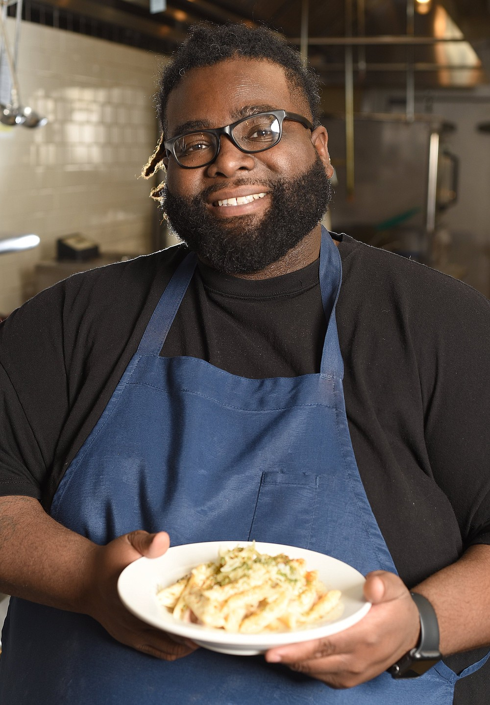
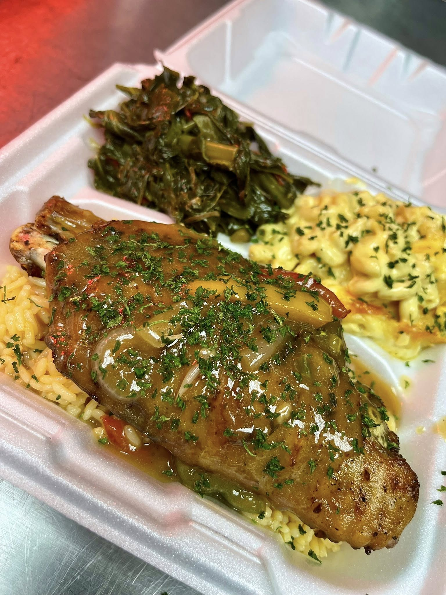
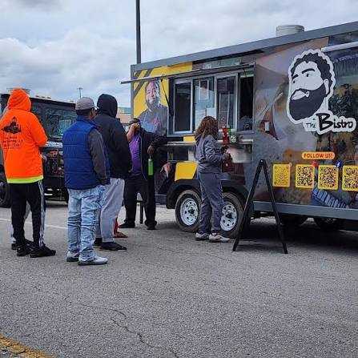
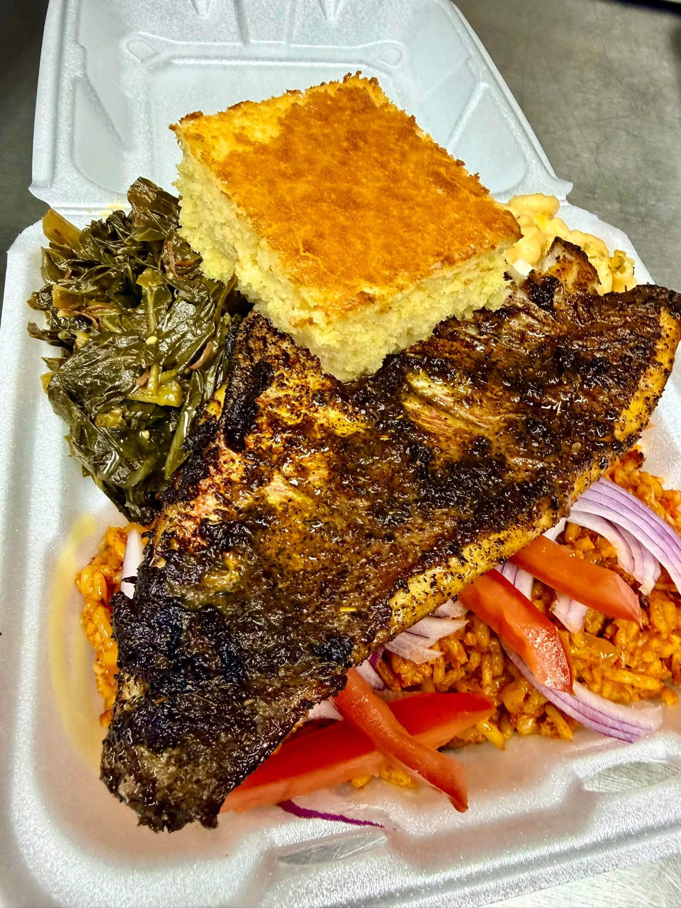

Chef Cornelius Lathan

About the Chef - The Bistro
Chef Cornelius Lathan comes from the heart of Chattanooga, growing up in the Oak Grove neighborhood downtown. Having discovered his love for cooking at an early age, he decided to gain formal training through a program at Culinard (now closed) in 2013.
Chef Lathan continued his journey as "The Bistro Cooking Show" on Youtube back in 2020, during the pandemic. After gaining traction with his online cooking show, he founded his own catering company called "Rileigh & Company" in 2021.
In 2023, The Bistro Food Truck made its debut at the Food Truck Festival & Expo hosted at The Kitchen Incubator of Chattanooga. Specializing Soul Food with influences of French and Mexican cuisine, since opening his truck, Chef Lathan has been kept busy serving his customers and selling out almost every Wednesday.



Review
Chef Cornelius Lathan has been a Chef that I have followed since early this year. He was among the first Chefs that I followed during my journey to discover new foods in Chattanooga. I don't remember exactly how I found him, but I am so glad that I did. Going in, I did my best not to set too many expectations, knowing the limitations of operating out of a food truck/rental kitchen. But man, did they blow me away.
The first dish that I had from The Bistro was a plate of fried Catfish 'n Grits served with Cornbread and a serving of Banana Pudding. The catfish was perfectly tender with a flavorful coating. The grits were super cheesy and paired well with the fish. The cornbread was so pillowy and sweet, it was almost like a slice of cake. The banana pudding was nice and creamy with fresh slices of banana layered within it.
Chef Lathan has definitely raised the bar for food trucks here in Chattanooga. I've had his food a handful more times since my first visit, and each time I am equally impressed. This is one of the businesses I am thouroughly rooting for, and cannot wait to see what else Chef Lathan can bring to our city.